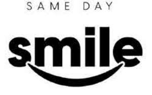

Trade Mark Journal No.2025/019 9 May 2025
UK00004193309 23 April 2025 (5,10,35,41,44)
Mark 1

Mark 2
Mark 3
- Class 5
- Dental preparations; dental wax; dental wax for the preparation of dental moulds; dental amalgams; dental veneers for use in dental restoration; dental resin for bridges, crowns and veneers; dental composites; dental composite materials; dental bonding material; dental cements; dental ceramic; dental adhesives; dental abrasives; dental cement; dental resin cements; dental alloys; porcelain for dental protheses; dental materials for making models of teeth; dental bonding materials; dental impression materials; dental materials for repairing teeth; teeth filing materials; materials for artificial teeth; materials for tooth restoration.
- Class 10
- Surgical, medical and dental apparatus and instruments; dental instruments; dental equipment; apparatus for use in the repair of teeth; dental protheses; dental braces; dental bite trays; dental implants; dental implants made from artificial materials; braces for teeth; teeth aligners; artificial teeth; dental caps for teeth; dental crowns; dental bridges; orthodontic brackets for use in straightening teeth; orthodontic retainers; dentures.
- Class 35
- Marketing services in the field of dentistry and dental care; advertising services in the field of dentistry and dental care.
- Class 41
- Education; providing of training; education, teaching and training in the field of dentistry and dental care; training courses in connection with dentistry services.
- Class 44
- Dentistry; dental services; dental consultations; dental hygienist services; cosmetic dentistry services; orthodontic services; dental clinic services; teeth whitening services; teeth cleaning services.
SAME DAY SMILE LIMITED
Representative: Brabners LLP